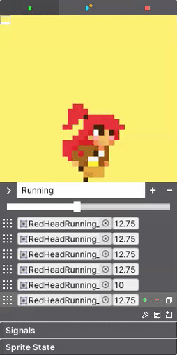
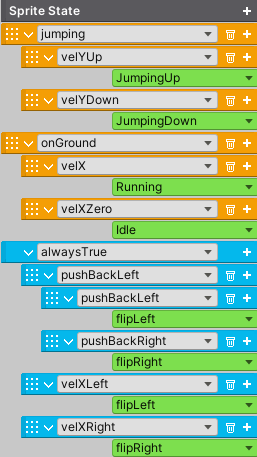

Sprite Engine
The SpriteEngine component provides an extremely easy way for creating and storing sprites. The Sprite Engine removes the hassle of working with different systems and centralizes the power of creating sprites all in one place. Hence, there is no more need for creating animation objects or jumping from window to inspector to set things up. Everything is handled in the inspector. This system will even handle the logic for controlling the animation state of your character, so there is no need to code. The system really does aim to be a one stop solution for sprite animations.
To get started, simply add the SpriteEngine component to any gameobject. A SpriteRenderer will be added automatically. You will then see this.
Property |
|
|---|---|
Play Buttons |
Play the sprite in the inspector or in the scene. |
Display Window |
Displays the sprite. Drag and zoom the window. Right click to reset the window. Change the background color in the upper left corner. |
New Sprite |
Create, name, and remove sprites. Use the drop down menu to change between them. By default, the system creates one sprite called New Sprite. Rename it. |
Drop Sprites Here |
When a new sprite is created, drop the sprites here. Click this area to lock the inspector for convenience. |
Wrench Icon |
Add properties to each sprite to modify, like a Transform or Collider2D. |
Options Icon |
If necessary, set the sprite to loop once and set the OnLoopOnce event. Loop Start Index specifies where to start playing the sprite once it’s already played once. |
Drop Icon |
Gives the option to replace all the current sprites. |
Signals |
Signals are used to control the animation state. |
Sprite State |
Create an animation state machine. |
Once a sprite has been created, the sprite menu will appear. Rearrange, add, and delete sprites here. You can also test the play rate by adjusting the global speed slider. This will set the speed for all the sprites instantly. For customization, each sprite can also be applied an individual play speed.
Signals
Signals are just simple booleans but they’re an integral part of the animation state machine. When a signal is set true, the state machine reads it and plays the corresponding sprite. That’s it. For example, when a character is touching the ground, the system will set the onGround signal true. The Sprite Engine can then read this signal and play the standing animation.
The engine itself has the potential of setting many signals, and so for convenience, all the possible signals the engine can set are automatically provided (check player signals for the full list). All that is required is to click and enable the signal block you intend to use.
However, if you’re not using Flare Engine, you will need to provide these signals to the Sprite Engine. This means you’re in charge of setting the signals true. You will need a reference to Sprite Engine (using TwoBitMachines.TwoBitSprite) and set tree.signal which is a Dictionary<string, bool>. The string being the name of the signal and the boolean represents its active state. If you’re using Flare Engine, there is no need to worry about this. The engine will be in charge of reading and resetting the signals.
And of course, it is possible to create your own signals by using the Create Signal field. These are mostly needed for creating attack animation signals.
Sprite State
The state machine that will be configured to set the animation state of a character. At its core, this system is only reading signals and setting the appropriate sprites accordingly.
Once all the signals and sprites have been created, click the add button on the bar to create a state. The animation state (depicted in orange) will have a list of all the available signals. Once the signal is chosen, click the drop down arrow to open the state and set the sprite (depicted in green) that should play if the signal goes true.
Once all the states are created, you must arrange them for priority from top to bottom. The system will check each state, starting from the top, and continue to the bottom until it finds a signal that is true. The system will then stop executing and set the appropriate sprite.
Each state can also have a sub-state in case there is a group of related signals that need to be organized. To create a sub-state, click the add button. States can be nested up to four levels with sub-states.
The example below shows a state machine with two states. The jumping state has two sub-states. If the jumping signal goes true, the system will check the signal velYUp, which means the velocity is positive. If it’s true, the system will play the JumpingUp sprite. If VelYDown is true instead, the system will play the JumpingDown sprite.
The second state works the same way. You will also notice the blue state, which is responsible for flipping the sprite int the x or y direction. The main signal is set to alwaysTrue so that the system is always checking this state. The system then checks the signals and flips the sprite accordingly. The most common signals to check will be velXLeft and velXRight. If the x velocity is pointing in either of those directions, the system will flip the sprite in that direction.
Important
All your sprites must be created facing to the right to work correctly with sprite flip.
Properties
This allows every sprite to have extra properties to modify and a per frame basis. Sometimes it’s necessary to control a Transform or a Collider2D to work seamlessly with the animation. A very common scenario is to modify a Collider2D and change the size of its collision area to work with an attack animation.
Click the wrench icon and then select the type of property to work with. Once selected, the property will appear in the sprite menu. Set its reference and open it to begin modifying.
Tip
When working with properties, you can see the changes made to them in the scene.
In the example above, the animation depicts a sword attack. On the second frame, we can see the BoxCollider2D has its offset and size set to particular values. If the third frame is selected, the values for these settings can be the same or different, depending on what’s necessary for the animation. The properties must be enabled by clicking the green plus button. You can also choose to interpolate these properties from frame to frame by enabling the interpolate toggle. Once enabled, the I button will appear next to each plus button. Click on it to enable interpolation for the specified property.
Tip
It is common for attack animations to loop only once. The OnLoopOnce event usually calls some method to let the system know the animation is complete.